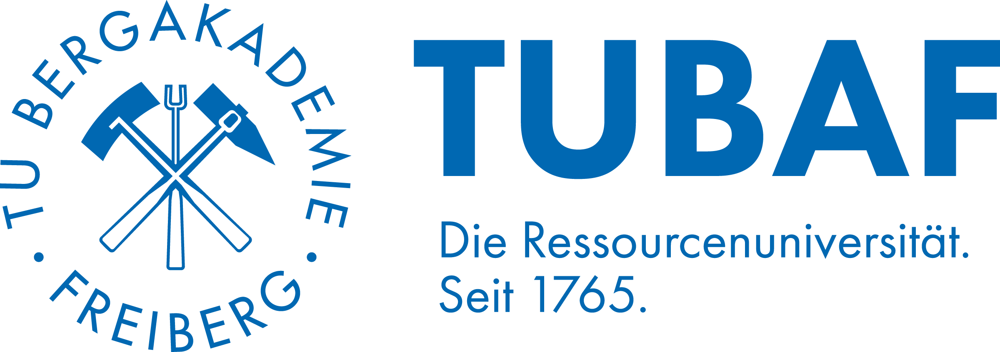
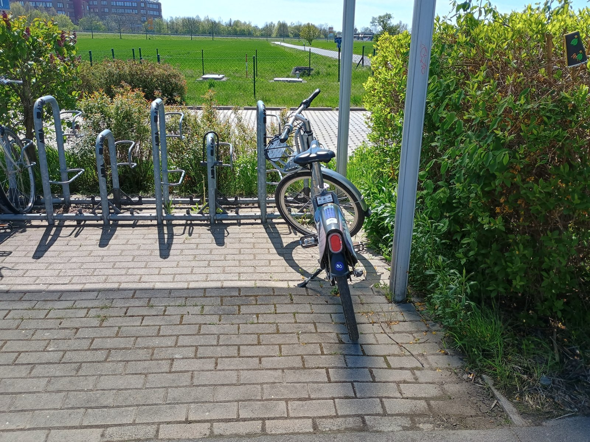
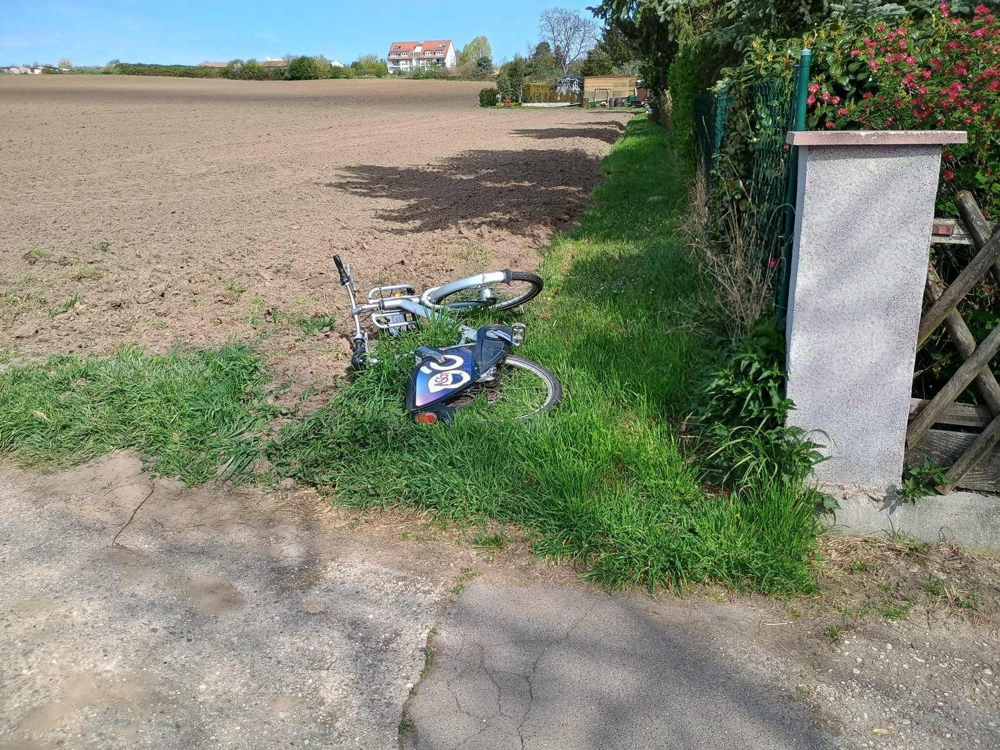

Robots for bike sharing?
Results of the EMBRACER Pilot Action Schkeuditz



Prof. Dr.-Ing. Sebastian Zug, TU Bergakademie Freiberg
EMBRACER Workshop, Rome, 17 November 2026
Pilot Action partners: Aufbauwerk Region Leipzig GmbH · Lineris GmbH · City of Schkeuditz · TU Bergakademie Freiberg
EMBRACER Workshop, Rome, 17 November 2026
Pilot Action partners: Aufbauwerk Region Leipzig GmbH · Lineris GmbH · City of Schkeuditz · TU Bergakademie Freiberg